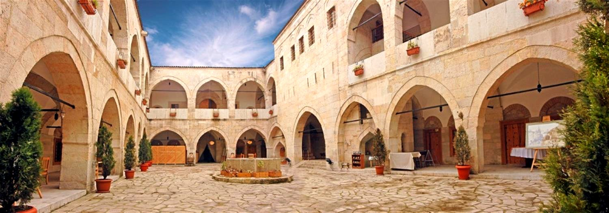

Tarihi Cinci Hanı Ve Hamamı Hakkında
Cinci Han: Safranbolu'da han olarak en göze çarpan yapı ilçe merkezinin ortasında bulunan, Sultan İbrahim’in Anadolu Kazasker'lerinden Cinci Hoca (Kazasker Hüseyin Efendi) tarafından memleketi olan ilçeye bıraktığı eserlerden biri olan "Cinci Han" önemli bir mimari yapıdır. Kesme ve moloz taştan 17. yy. ortalarında yapılmış olan han, iki bölümden oluşmaktadır. Ortadaki avluya açılan iki katlı revakların gerisine odalar, güney batısına ise avludan geçilen ahır bölümü yerleştirilmiştir. Avlunun ortasında bulunan havuz genel görünümünü bugün de korumaktadır. Yeni restore edilerek hizmete açılan 2 katlı 63 odalı Cinci Hanı’nın giriş kapısı, kilit ve anahtarı; Türk demir işçiliğinin ilginç örneğidir.
Cinci Hamamı (Yeni Hamam): Safranbolu'da Çeşme Mahallesi'nde Çarşı içindedir. Bu hamamın da Cinci Hoca tarafından yaptırıldığı bilinmektedir. Padişah I. İbrahim zamanında Kazasker olan Safranbolulu Cinci Hoca (Karabaşzade Hüseyin Efendi) tarafından 1645 yılında yaptırılmış olup halen hizmet vermekte olan hamamda kadın ve erkeklere ait iki bölüm bulunmaktadır. Her ne kadar halk arasında geçmişte yeni hamam olarak ifade edilse de hem yaptıranın Cinci Hoca olması, hem de turistler tarafından daha fazla akılda kalıcı ve cezbedici olabileceği düşünülerek Cinci Hamamı olarak ifade edilmesinin yerinde olacağı düşünülmektedir.